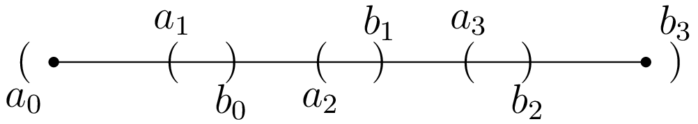

February 26th
Today I learned how to show intervals $[a,b]$ have Lebesgue measure $b-a.$ I don't think I'm going to complete showing that $\mu$ is a measure soon because it looks significantly more involved than I bargained for.
Computing $\mu([a,b])$ is mostly to sanity-check that our definition makes sense. This turns out to be somewhat subtle—because we're using countably many intervals in our definition of $\mu,$ we have to deal with infinite sums somehow. What makes closed intervals nice is that they are compact, letting us deal with finite sums instead. We claim the following.
Proposition. The closed interval $[a,b]$ for $a,b\in\RR$ has Lebesgue measure $b-a.$
To show this, we want.\[\mu([a,b])=\inf\left\{\sum_{k=0}^\infty(b_k-a_k):[a,b]\subseteq\bigcup_{k=0}^\infty(a_k,b_k)\right\}.\]Note that $(a-\varepsilon/2,b+\varepsilon/2)$ makes a basis cover of $[a,b]$ of length $b-a+\varepsilon,$ so sending $\varepsilon\to0$ means that $\mu([a,b])\ge b-a.$ For the reverse inequality, take any basis cover $\{(a_k,b_k)\}_{k=0}^\infty$ of $[a,b].$ We want to show\[\sum_{k=0}^\infty(b_k-a_k)\stackrel?\ge b-a.\]However, $[a,b]$ is compact (!), so we can extract a finite subcover from $\{(a_k,b_k)\}_{k=0}^\infty.$ Note that each interval has nonnegative $b_\bullet-a_\bullet,$ so the sum does not increase by removing all but finitely many of the intervals. Re-indexing, we name our subcover $\{(a_k,b_k)\}_{k=0}^N$ so that we want\[\sum_{k=0}^N(b_k-a_k)\stackrel?\ge b-a.\]The reason why a finite sum is nice is that we can now rearrange terms freely. The picture now is that the intervals $(a_\bullet,b_\bullet)$ should look something like this.
In particular, the differences $b_k-a_{k+1}$ are all positive while $a_0 \lt a$ and $b_N \gt b.$ This suggests how to get our inequality. To help with technicalities, we apply the following filters and rearranging.
-
We get rid of any intervals in the $\{(a_k,b_k)\}_{k=0}^N$ that are a strict subset of any other interval.
-
We get rid of intervals that do not intersect $[a,b]$ at all.
-
Among the $(a_\bullet,b_\bullet)$ with $a_\bullet \lt a,$ we choose the one with greatest $b_\bullet$ and get rid of the others. (This is effectively chooses the largest interval with respect to $[a,b].$)
-
Similarly, among the $(a_\bullet,b_\bullet)$ with $a_\bullet \lt a,$ we choose the one with least $a_\bullet.$
-
We arrange the $(a_\bullet,b_\bullet)$ to ascend by $a_\bullet.$ We note that this makes the $b_\bullet$ ascend as well, for $a_k\le a_{k+1}$ with $b_k\ge b_{k+1}$ implies $(a_k,b_k)\supseteq(a_{k+1},b_{k+1}).$
Now, we think about the sum like\[b_N+(-a_N+b_{N-1})+(-a_{N+1}-b_{N+2})+\cdots+(-a_1+b_0)-a_0\stackrel?\ge b-a.\]We note $b_N$ is the largest $b_\bullet,$ so we must have $b_N \gt b$ to cover $[a,b].$ Also, it is the only $b_\bullet$ with $b_\bullet \gt b$ because we filtered the others out. Similarly, $a_0 \lt a$ and is the only $a_\bullet$ with this property. Thus, $b_N-a_0\ge b-a,$ and we need to show the remaining terms are nonnegative.
Our ordering by $a_\bullet$ means $a_{k+1}\in(a_k,b_k)$ or $k \lt N$ for each $k.$ Indeed, $a_{k+1}\ge a_k,$ and if $a_{k+1}\ge b_k,$ then all of the remaining $a_\bullet$ past $a_{k+1}$ are also at least $b_k,$ so $b_k$ never gets covered in $[a,b],$ which is a problem: $b_k \lt a$ means $(a_k,b_k)$ doesn't intersect $[a,b],$ and $b_k \gt b$ requires $k=N,$ for this is the only $k$ (the largest one) satisfying this.
It follows $-a_{k+1}+b_k\ge0,$ so we see\[b_N+(-a_N+b_{N-1})+\cdots+(-a_1+b_0)-a_0\ge b-a.\]This is what we wanted. $\blacksquare$
We take a second to remark that we have not actually shown $[a,b]$ is measurable, and I have not even defined what measurable means. For the sake of completeness, we take the following definition.
Definition. A set $A\subseteq\RR$ is Lebesgue-measurable if and only if $\mu(A)=\mu(A\cap S)+\mu(A\cap S^c)$ for all sets $S\subseteq\RR.$
It turns out that Lebesgue-measurable sets form a $\sigma$-algebra, so showing that (open or closed) intervals are Lebesgue-measurable implies that this is a Borel measure. (We still have to verify that countable disjoint unions can be separated.) I don't know how to prove either of these, but honestly that sounds like someone else's job.